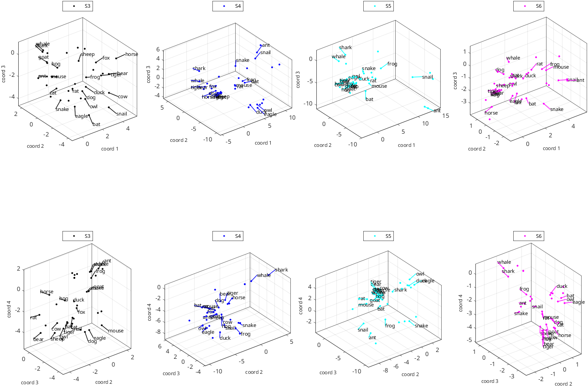
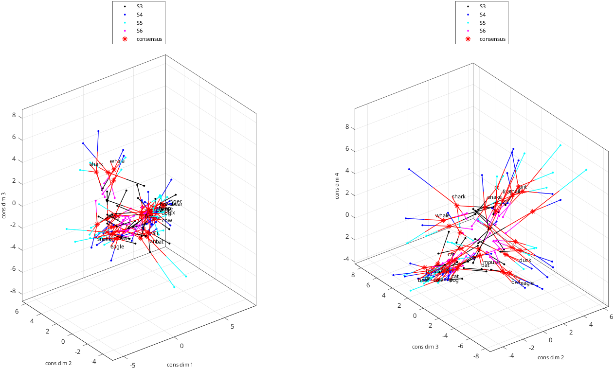

rs_align_disp_coordsets_demo
Demonstration workflow for display of several datasets and their consensus
Workflow:
- data files are read
- data files are aligned (coordinates each stimulus are placed in corresponding rows)
- a consensus is calculated by rotating each dataset so that the coordinates are as closely matched as possible
- the component datasets
- the original data, the components, and the consensus are displayed
Plot options illustrated:
- choice of dimension and coordinates to plot
- several plots into same figure
- selective datapoint labelling with custom callouts
- custom arrangement of subplots
- rotation of raw data coordinates into a consensus
- combining consensus and individual datasets on same plot
- custom data point symbols
- custom axis labels
- custom labeling of datasets based on subject ID
- connecting corresponding points between plots
- selection of data points to label based on length of stimulus name
See also: rs_get_coordsets, rs_align_coordsets, rs_knit_coordsets, rs_concat_coordsets, rs_disp_coordsets
%section to force btc defaults, even if rs_aux_defaults.mat has been created or modified
=struct;
={};
Read four datasets
Datasets are from four subjects of Waraich and Victor, J. Neurosci. 2024
={};
=;
=auxs_force;
=; %input type 1=data, if_auto=1: non-interactive, if_log=1 to log
=nsets;Read the coordinates of each dataset with rs_get_coordsets
[]=;
=;
=data_read.sas{1}.nstims; %number of stimuli; assume same in all sets
=5; %max length of a stimulus label
=[];
Output:
entering set 1 of 4:
primary dataset 1 is experimental data
37 different stimulus types found in data file ./samples/animals/image_coords_S3
37 different stimulus types found in setup file [unused]
37 of 37 labels found
coordinate sets with 1 to 7 dimensions read.
entering set 2 of 4:
primary dataset 2 is experimental data
37 different stimulus types found in data file ./samples/animals/image_coords_S4
37 different stimulus types found in setup file [unused]
37 of 37 labels found
coordinate sets with 1 to 7 dimensions read.
entering set 3 of 4:
primary dataset 3 is experimental data
37 different stimulus types found in data file ./samples/animals/image_coords_S5
37 different stimulus types found in setup file [unused]
37 of 37 labels found
coordinate sets with 1 to 7 dimensions read.
entering set 4 of 4:
primary dataset 4 is experimental data
37 different stimulus types found in data file ./samples/animals/image_coords_S6
37 different stimulus types found in setup file [unused]
37 of 37 labels found
coordinate sets with 1 to 7 dimensions read.
datasets selected:
set 1: dim range [ 1 7] label: samples/animals/image_S3
set 2: dim range [ 1 7] label: samples/animals/image_S4
set 3: dim range [ 1 7] label: samples/animals/image_S5
set 4: dim range [ 1 7] label: samples/animals/image_S6
##### rs_warning: cannot find stimulus coordinates, so cannot identify rays
##### rs_warning: cannot find stimulus coordinates, so cannot identify rays
##### rs_warning: cannot find stimulus coordinates, so cannot identify rays
##### rs_warning: cannot find stimulus coordinates, so cannot identify rays
Display the original data
=[]; %make two 3-d plots, one with dimensions 1,2,3, one with dimensions 2,3,4
=;%
=figure; %open a figure for the plots
=auxs_force.opts_disp;
=hfig;
=[];
='raw data';
=4; %display coordinates for the 4-dimensional model
=; %display coordinates in groups of 3
='list'; %we explictly list the coordinate groups
=coord_groups;
=subj_ids; %label each plot with subject ID
='list'; %we provide a list for the labels for each data point
=data_label_list; %labels for each data point
=0.3; %labels are slightly removed from each data point
='set_colors'; %use the color assigned to each dataset for the callout lines
='-'; %dashed callout lines
='North'; %legend location
=;
=;
each call to rs_disp_coordsets will plot data from one subject, both coordinate groups
=haxes;
=iset; %subject selection
aux_out_raw{iset}=; %create the plot
end
align data, rotate data into a consensus, and use each component, aligned to consensus, for further plotting
=auxs_force.opts_align;
[]=;
=auxs_force.opts_knit;
[]=;
=[]; %stimulus order may have changed, so need to re-identify the stimuli
Output:
proceeding with alignment of 4 datasets, paradigm type animals, stimuli must be present in 1
alignments attempted with 4 datasets
set 1: stimuli: 37, type data, label samples/animals/image_S3
set 2: stimuli: 37, type data, label samples/animals/image_S4
set 3: stimuli: 37, type data, label samples/animals/image_S5
set 4: stimuli: 37, type data, label samples/animals/image_S6
unique typenames: 37
typenames present in at least 1 datasets: 37
if_type_coords_remake=1 (determined from metadata)
##### rs_warning: cannot find stimulus coordinates, so cannot identify rays
##### rs_warning: cannot find stimulus coordinates, so cannot identify rays
##### rs_warning: cannot find stimulus coordinates, so cannot identify rays
##### rs_warning: cannot find stimulus coordinates, so cannot identify rays
number of stimuli missing in dataset 1: 0
number of stimuli missing in dataset 2: 0
number of stimuli missing in dataset 3: 0
number of stimuli missing in dataset 4: 0
data table
37 37 37 37
37 37 37 37
37 37 37 37
37 37 37 37
sa_pooled and data_align will be created.
NaN removal attempted with 4 datasets
set 1: stimuli: 37, type data, label samples/animals/image_S3
set 2: stimuli: 37, type data, label samples/animals/image_S4
set 3: stimuli: 37, type data, label samples/animals/image_S5
set 4: stimuli: 37, type data, label samples/animals/image_S6
unique typenames: 37
proceeding with alignment of 4 datasets, paradigm type animals, stimuli must be present in 1
alignments attempted with 4 datasets
set 1: stimuli: 37, type data, label samples/animals/image_S3
set 2: stimuli: 37, type data, label samples/animals/image_S4
set 3: stimuli: 37, type data, label samples/animals/image_S5
set 4: stimuli: 37, type data, label samples/animals/image_S6
unique typenames: 37
typenames present in at least 1 datasets: 37
if_type_coords_remake=1 (determined from metadata)
##### rs_warning: cannot find stimulus coordinates, so cannot identify rays
##### rs_warning: cannot find stimulus coordinates, so cannot identify rays
##### rs_warning: cannot find stimulus coordinates, so cannot identify rays
##### rs_warning: cannot find stimulus coordinates, so cannot identify rays
knitting 37 stimuli across 4 datasets, dimensions 1 2 3 4 5 6 7
allow reflection: 1, allow offset: 1, allow scale: 0, normalize scale: 0, rotate to pcs: 0
calculations with allow_scale=0, if_normscale=0
set 1: created shuffles for 37 stimuli
set 2: created shuffles for 37 stimuli
set 3: created shuffles for 37 stimuli
set 4: created shuffles for 37 stimuli
created Procrustes consensus from dim 1 to dim 1 based on component datasets, iterations: 2, final total rms dev per coordinate: 2.50094
created Procrustes consensus from dim 2 to dim 2 based on component datasets, iterations: 8, final total rms dev per coordinate: 2.82280
created Procrustes consensus from dim 3 to dim 3 based on component datasets, iterations: 17, final total rms dev per coordinate: 2.93191
created Procrustes consensus from dim 4 to dim 4 based on component datasets, iterations: 11, final total rms dev per coordinate: 2.86859
created Procrustes consensus from dim 5 to dim 5 based on component datasets, iterations: 16, final total rms dev per coordinate: 2.88087
created Procrustes consensus from dim 6 to dim 6 based on component datasets, iterations: 23, final total rms dev per coordinate: 2.91432
created Procrustes consensus from dim 7 to dim 7 based on component datasets, iterations: 52, final total rms dev per coordinate: 2.92061
##### rs_warning: cannot find stimulus coordinates, so cannot identify rays
=opts_disp_raw; %many options match the raw plot
=; %new figure
=[];
=;
='consensus';
=[];
='cons dim';
=data_label_list_consensus;concatenate the component data and the consensus
=;opts_disp_cons.set_labels{nsets+1}='consensus';
='star_last';
opts_disp_cons.set_markers{nsets+1}='*';
='last';
=1.0;;